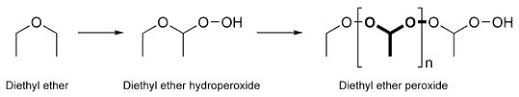
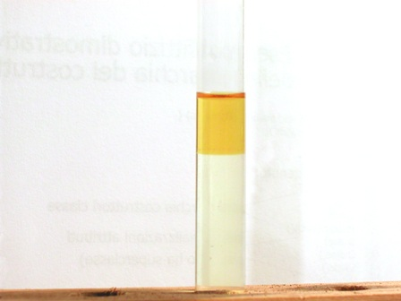

Tutti quelli che hanno a che fare con la chimica sanno che nell'etere possono formarsi delle sostanze che godono di un aggettivo magico: "esplosivo!".
Perchè questo aggettivo sia magico è presto detto: attira l'attenzione come il miele attira le api (o qualcos'altro che non nomino attira le mosche).
Attenzione, qui non voglio parlare di roba che scoppia ma esattamente viceversa.
Per azione dell'aria e della luce si possono effettivamente formare nell'etere dei perossidi (sono molecole che contengono una catenella di due ossigeni -O-O- ) che allo stato secco o fortemente concentrati hanno caratteristiche esplosive e sono molto sensibili al calore e allo sfregamento.
Ecco che allora, se il perossido si fosse formato nel tappo della bottiglia che magari non era aperta da molto tempo, la microscopica deflagrazione che potrebbe accadere aprendola andrebbe ad incendiare tutto il liquido.
E l'etere, dal punto di vista dell'infiammabilità, è veramente un primo della classe.
Quindi il vero pericolo è questo, non certo lo scoppio di una quantità infinitesima di sostanza.
Oppure, caso completamente diverso, potrebbe succedere che qualche sprovveduto chimico da strapazzo distilli fino quasi a secchezza dell'etere ed allora i perossidi, se presenti, andrebbero a concentrarsi nel palloncino fino ad esplodere.
Non parliamo di forti esplosioni (nemmeno come quella di una micetta), ma quando sono presenti solventi infiammabili in recipienti di vetro con persone nelle vicinanze, NIENTE deve avere la possibilità di esplodere, altrimenti qualcuno rischia di prendersi una scheggia in un occhio (o creare un incendio).
Ciò che si forma col passare del tempo nella bottiglia di etere ben si vede dalla figura sottostante, che per comodità prendo in prestito da Wiki: etere -> idroperossido -> perossido (prodotto di polimerizzazione).

Naturalmente le quantità sono minime, pochi milligrammi per litro, e di nessun pericolo fin che le sostanze sono in soluzione.
La quantità è minima anche perchè nell'etere vengono appositamente aggiunti degli inibitori verso la formazione dei perossidi, come il butilidrossitoluene (BHT, pochi ppm).
Un semplice modo di verificare se nel proprio etere vi siano dei perossidi è il metodo allo ioduro, che per curiosità ho provato nella mia bottiglia di etere vecchia di due tre anni.
In una provetta porre una puntina di spatola di KI, 3 ml di acqua, 1 ml di acido acetico e 3 ml di etere.
Agitare vigorosamente e poi lasciare in riposo 5 minuti.
Se tutto rimane incoloro non ci sono perossidi, mentre se appare un colore da giallino fino a violaceo il test è positivo.
Si può aumentare di molto la sensibilità (ma secondo me non ha senso) aggiungendo una goccia di salda d'amido, e allora il colore vira al blù scuro anche con tracce di iodio.
E' facile intuire che lo iodio dello ioduro in ambiente acido è ossidato a iodio elementare che colora il solvente o reagisce con l'amido.
Ecco il risultato del mio test, che come si può vedere è positivo, anche se debolmente. Quindi anche nel mio etere ci sono i perossidi!

La probabilità che mi esploda la bottiglia mentre la apro la ritengo pari più o meno a zero.
Qualche anno fa mi era capitato di maneggiare (cautamente) una vecchissima bottiglietta di etere di almeno 40 anni (vero etere d'annata, si può dire...) che fu di mio padre e che pur non presentava la minima cristallizzazione attorno al tappo ed evaporava benissimo senza lasciare tracce.
Segno evidente che il pericolo, in ambito di normale laboratorio, è molto più teorico che reale.
(Vista l'importanza di questo solvente, se il pericolo fosse reale avrebbero già chiuso tutti i laboratori chimici per sistematica morìa degli operatori...).
Va comunque giustamente segnalato che questo pericolo può esistere, anche se l'allarmismo esagerato in ambito chimico fa sempre un bell'effetto.
I perossidi in oggetto si possono facilmente eliminare dall'etere passandolo in colonna di allumina o più facilmente con un trattamento al solfato ferroso.
Il pericolo vero, quando si maneggia l'etere, è che ci siano fiamme libere in giro e che i vapori prendano fuoco anche da lontano.
I vapori di etere sono pesanti, estremamente infiammabili, e viaggiano sul bancone o sul pavimento che è un piacere.
Questo sì che è pericoloso!
(Ma poi a prendersi la colpa della disattenzione saranno magari i poveri perossidi, con quell'aggettivo magico che comincia con "e").
2 commenti